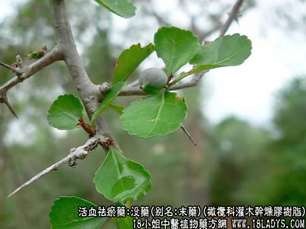
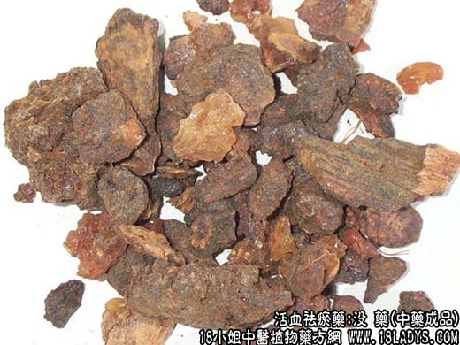

【中药概述】
没药，别名：末药，为橄榄科灌木或小乔木没药树及同属植物中的干燥胶树脂。苦，平。归心、肝、脾经。
1．活血止痛：用于脘腹疼痛，风湿痹痛，跌打损伤，经行腹痛等症。如（<医学心悟>手拈散）。
2．消肿生肌：用于疮疡肿痛或溃破久不收口，没药乳香研末，外敷溃疡，有消肿止痛、去腐生肌的作用。
【药物形态】
天然没药呈不规则颗粒性团块，大小不等．大者直径长达6cm以上。表面黄棕色或红棕色，近半透明部分呈棕黑色，被有黄色粉尘。质坚脆，破碎面不整齐，无光泽。有特异香气，味苦而微辛。胶质没药 呈不规则块状和颗粒，多黏结成大小不等的团块，大者直径长达6cm以上，表面棕黄色至棕褐色，不透明，质坚实或疏松，有特异香气，味苦而有黏性。
【药效鉴别】没药功用与乳香类同，并常与之相须为用。一般认为乳香偏于行气，没药偏于散瘀，二药同用有相当益彰之妙。
【药理作用】1.对多种致病皮肤真菌有抑制作用。2.可增强胃肠蠕动。
【化学成分】含挥发油，没药树脂、没药酸、丁香酚、没药萜醇、糖类等。
【用量用法】3——10g，水煎服。外用适量。
【附】醋没药：能增强活血止痛，消肿生肌作用，并有易碎矫味之效。
本文解释权归收纳中草药图谱的中药大全所有，本文地址：https://www.daquan.com/post/1996.html